Teoria da Constituição · DIRBN.02 · 2026.2 · II Unidade
Revisão para a prova da II Unidade
Os conceitos que a prova cobra, um a um: o que cada um diz, como aparece num caso e como responder.
* Material elaborado com apoio de Inteligência Artificial Generativa — Claude (Anthropic) — para estruturação das lâminas e redação das questões simuladas. Fontes conferidas e responsabilidade integral do professor.
FBBR — Direito — 2º semestre, Turma B — Prof. Mario Bastos — aula de 01/12/2026.
Revisão · combinados
Antes de começar
Como é a prova
Terça-feira, 08/12
No horário da aula. Individual, sem consulta, valendo 6,0.
É cumulativa
Cai a I Unidade (Módulos 1, 2A e 2B) e, com peso maior, a II Unidade (Módulos 3, 4 e 5).
Doze questões
Dez objetivas de 0,4, com cinco alternativas (A a E). Duas discursivas de 1,0.
Regra de hoje: vocês respondem primeiro, discutimos depois, e só então aparece o gabarito. As questões simuladas parecem as da prova, mas não são iguais.
Revisão · esquema
Esquema
O caminho de hoje acompanha a prova
Bloco
Conceito
1
Constituição e constitucionalismo
2
Escrita e não escrita
3
Origem: cesarista
4
Rigidez e supremacia
5
Sentidos de Constituição
6
Normas originárias
Bloco
Conceito
7
Originário × derivado
8
Limitação circunstancial
9
Do Poder Moderador ao art. 142
10
1891 e 1937
11
Preâmbulo
12
ADCT
Blocos 1 a 5: I Unidade. Blocos 6 a 12: II Unidade. Em cada bloco: o conceito, o desenvolvimento, a ideia para levar e uma questão simulada.
1 · Constituição e constitucionalismo
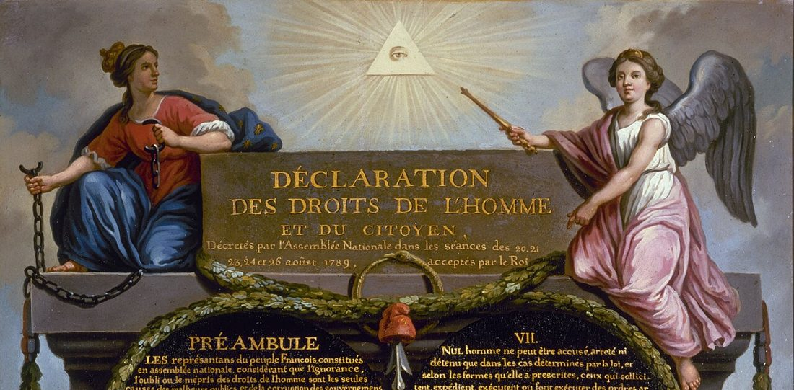
Declaração dos Direitos do Homem e do Cidadão, 1789 · Localcosmos · CC0 · Wikimedia Commons
Questão 1 · Módulo 1
Ter um documento não é ter Constituição
A fórmula de 1789: a sociedade sem garantia de direitos nem separação de poderes não tem Constituição.
O nome não basta: assembleia, solenidade e texto único dizem respeito à forma; o que define a Constituição moderna é limitar o poder.
O teste: quem manda está sujeito a regras? Há direitos que o cidadão pode opor ao governo?
1 · Constituição e constitucionalismo
Desenvolvimento
Documento constitucional × constitucionalismo
Critério
Só documento
Constituição em sentido moderno
Poder
Concentrado num órgão ou pessoa
Dividido e controlado (separação de poderes)
Cidadão
Sem direitos oponíveis ao governo
Titular de direitos que limitam o governo
Função do texto
Dar forma ao poder de quem manda
Limitar o poder e proteger a liberdade
Exemplo
A Carta de 1937, no Brasil (Módulo 4)
A Constituição de 1988
Mendes e Branco (2018), retomando a Declaração de 1789; Módulo 1.
1 · Constituição e constitucionalismo
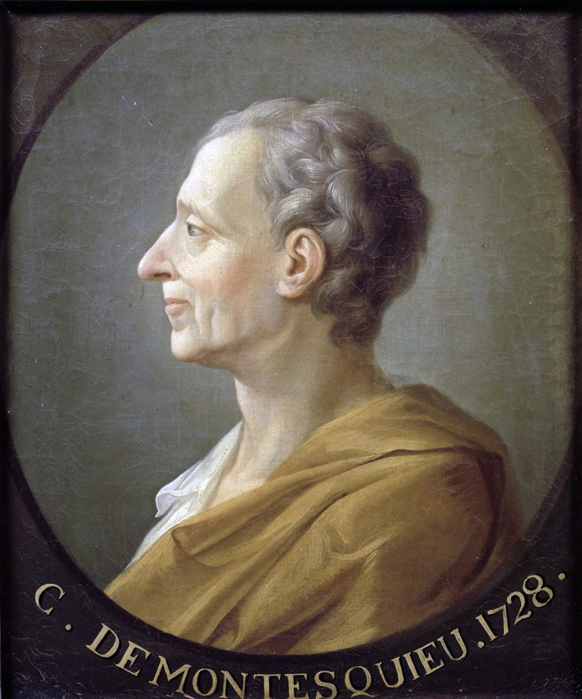
Montesquieu, retrato do século XVIII · After Jacques-Antoine Dassier · Public domain · Wikimedia Commons
Para levar
A ideia que resolve
Constituição, no sentido moderno, é a que limita o poder.
Por isso se diz que 1937 foi Constituição sem constitucionalismo: tinha o documento, não tinha a limitação.
1 · Constituição e constitucionalismo
Questão simulada 1
Um texto chamado Constituição
Em Norvânia, o rei promulga uma “Carta Constitucional” de 300 artigos que lhe dá o poder de fazer leis, governar e demitir juízes. O texto não prevê direitos dos súditos.
A. Norvânia tem Constituição moderna, porque o documento é escrito, extenso e foi promulgado pela autoridade máxima do país.
B. Norvânia não tem Constituição nem em sentido formal, porque documento outorgado pelo rei não pode receber esse nome.
C. Norvânia tem um documento chamado Constituição, mas não tem Constituição moderna, porque o texto não limita o poder.
D. Norvânia tem Constituição moderna, porque a separação de poderes é exigência restrita aos países de forma republicana.
E. Norvânia tem Constituição moderna, desde que um tribunal independente seja criado depois para controlar as leis do rei.
Toque na questão para ver o gabarito.
Gabarito: C. A Extensão e escrita são forma, não limitação. B Há Constituição em sentido formal: existe o documento. D A separação de poderes não é exclusividade republicana. E O problema é o conteúdo do texto, não a falta de um tribunal.
2 · Escrita e não escrita
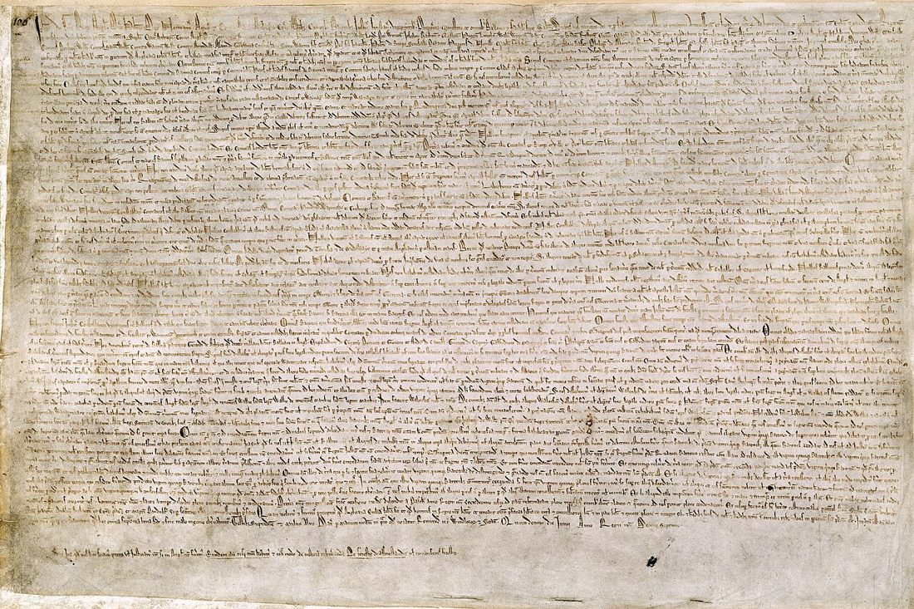
Magna Carta, 1215 (British Library) · Original authors were the barons and King John of England. U · Public domain · Wikimedia Commons
Questão 2 · Módulo 2B
Não escrita não quer dizer “feita só de costumes”
Escrita: normas reunidas num documento único e solene.
Não escrita: normas espalhadas em vários documentos, leis, decisões e convenções.
O detalhe que derruba: boa parte da Constituição não escrita está em textos escritos, como a Magna Carta e o Bill of Rights.
2 · Escrita e não escrita
Desenvolvimento
O que decide a forma é a organização, não a tinta
Escrita
Não escrita
Como as normas se organizam
Num documento único
Em várias fontes dispersas
Tem textos escritos?
Sim, o documento
Sim, vários: cartas, leis, decisões
Tem costumes e convenções?
Pode ter, ao lado do texto
Sim, ao lado dos textos
Exemplo
Brasil, 1988
Reino Unido
Erro da I Unidade
—
Dizer que ela é “feita só de costumes”
Módulo 2B, seção 2; registro da correção da prova da I Unidade (20/10).
2 · Escrita e não escrita
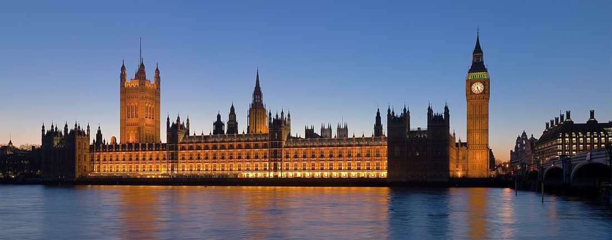
Palácio de Westminster, Londres · Diliff · CC BY-SA 2.5 · Wikimedia Commons
Para levar
A ideia que resolve
Pergunte: as normas estão reunidas num documento único?
Se não estão, a Constituição é não escrita, mesmo que quase tudo nela esteja em papel.
2 · Escrita e não escrita
Questão simulada 2
O reino sem código
Na Lusávia, as regras sobre o Parlamento estão em leis de 1701 e 1911; os direitos, numa carta medieval e numa lei de 1998; o papel do premiê, em convenções nunca escritas. Não há documento único.
A. A Constituição da Lusávia é escrita, porque quase todas as suas normas estão em leis e documentos escritos e publicados.
B. A Lusávia não tem Constituição, porque normas espalhadas em leis comuns não podem ser consideradas constitucionais.
C. A Constituição da Lusávia é não escrita só na parte das convenções; as leis e a carta formam uma Constituição escrita.
D. A Constituição da Lusávia é não escrita, porque as normas não estão num documento único, embora muitas sejam escritas.
E. A Constituição da Lusávia é não escrita, porque é formada exclusivamente pelos costumes políticos do seu povo.
Toque na questão para ver o gabarito.
Gabarito: D. A Ter textos escritos não torna a Constituição escrita. B Normas sobre o poder e os direitos são constitucionais onde estiverem. C A forma se diz da Constituição inteira, não por partes. E É o erro da I Unidade: há leis e cartas escritas.
3 · Origem: cesarista
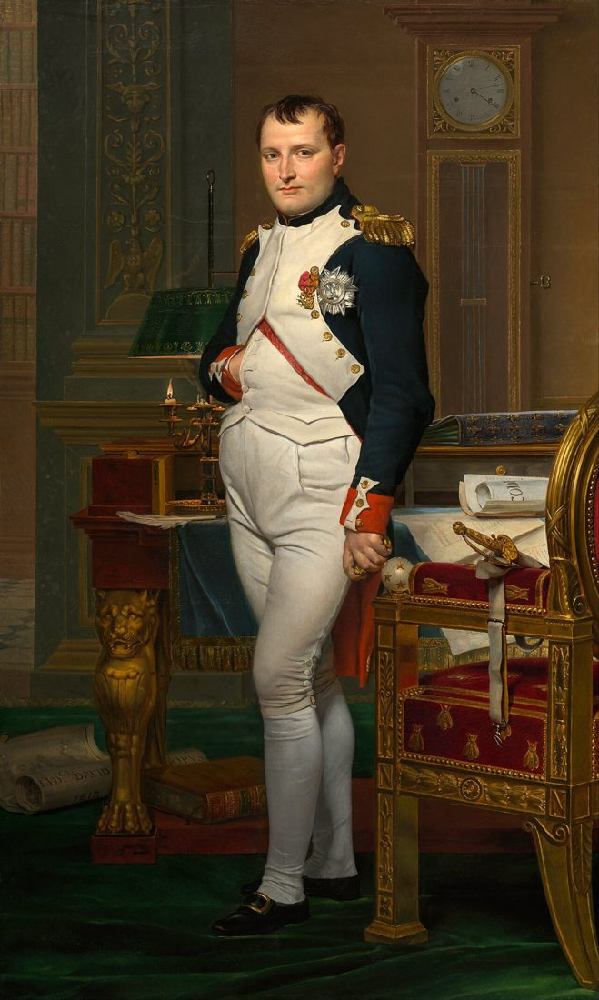
Napoleão em seu gabinete, por Jacques-Louis David (1812) · Jacques-Louis David · Public domain · Wikimedia Commons
Questão 3 · Módulo 2B
Cesarista: o povo só diz sim ou não
Outorgada: imposta por quem governa, sem participação popular.
Cesarista: imposta por quem governa e depois submetida a plebiscito ou referendo.
Promulgada: elaborada por representantes eleitos para isso, que deliberam sobre o conteúdo.
3 · Origem: cesarista
Desenvolvimento
Quatro origens, uma pergunta: quem escreveu e quem decidiu?
Origem
Quem escreve
Papel do povo
Outorgada
Quem governa
Nenhum
Cesarista
Quem governa
Ratifica depois, sem deliberar sobre o conteúdo
Promulgada
Assembleia eleita
Elege os constituintes, que deliberam
Pactuada
Duas forças em compromisso (ex.: rei e parlamento)
Variável
Módulo 2B, seção 3. Nome: Napoleão Bonaparte e Napoleão III usaram o plebiscito para ratificar textos próprios.
3 · Origem: cesarista
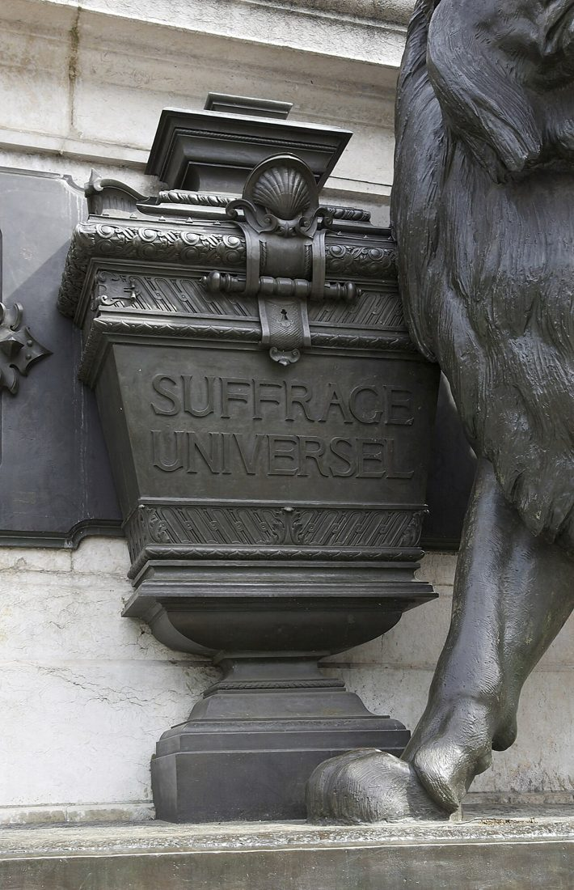
Urna de votação · Jebulon · CC0 · Wikimedia Commons
Para levar
A ideia que resolve
O que separa a cesarista da promulgada não é haver voto, é o momento e a função do voto.
Voto depois, num texto pronto, é ratificação. Foi a questão de menos acerto entre as de classificação na I Unidade (30%).
3 · Origem: cesarista
Questão simulada 3
O general e o referendo
Após um golpe, um general nomeia três ministros para redigir a nova Constituição de Teravia. O texto é submetido a referendo, sem possibilidade de emendas, e aprovado por 70% dos votantes.
A. Promulgada, porque o referendo, com ampla aprovação, equivale à deliberação de uma assembleia eleita pelo povo.
B. Pactuada, porque o texto nasceu do acordo entre o general e os três ministros encarregados de redigi-lo.
C. Outorgada, porque nenhuma consulta posterior ao povo altera a classificação de uma Constituição quanto à origem.
D. Promulgada, porque o povo exerceu diretamente a soberania, sem a intermediação de representantes eleitos.
E. Cesarista, porque o referendo só ratificou um texto imposto, sem que o povo deliberasse sobre o seu conteúdo.
Toque na questão para ver o gabarito.
Gabarito: E. A Referendo de texto pronto não é deliberação. B Ministros nomeados pelo general não são parte autônoma de um pacto. C A consulta posterior é o que distingue a cesarista. D Dizer sim a um texto pronto não é deliberar.
4 · Rigidez e supremacia
Supremo Tribunal Federal, Brasília · Agência Senado from Brasilia, Brazil · CC BY 2.0 · Wikimedia Commons
Questão 4 · Módulo 2B
Rigidez não basta: supremacia exige controle
Rigidez: é o procedimento de reforma mais difícil que o da lei.
Supremacia: é a posição da Constituição no topo, como fundamento de validade das demais normas.
O elo que falta: sem um órgão capaz de afastar a lei incompatível, a supremacia fica só proclamada.
4 · Rigidez e supremacia
Desenvolvimento
Três ideias que andam juntas, mas não se confundem
Ideia
O que é
Onde está em 1988
Rigidez
Reforma por rito agravado
Art. 60, § 2º: dois turnos, três quintos, em cada Casa
Supremacia
Constituição como fundamento de validade
Lei contrária é inválida
Controle
Órgão que afasta a lei incompatível
Art. 102: o STF guarda a Constituição; juízes no caso concreto
Sem controle
Rígida, mas com supremacia enfraquecida
Leis contrárias continuam sendo aplicadas
Módulo 2B, seções 19 e 20; Barroso (2020).
4 · Rigidez e supremacia
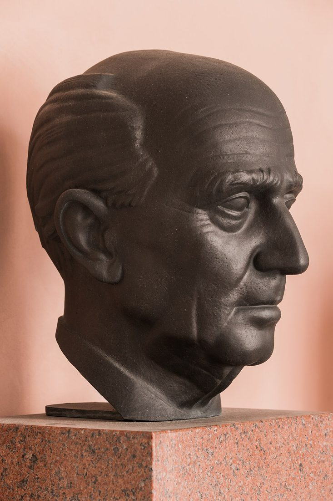
Hans Kelsen, busto na Universidade de Viena · Hubertl · CC BY-SA 4.0 · Wikimedia Commons
Para levar
A ideia que resolve
Afirmar superioridade não produz superioridade.
Foi a questão de 24% de acerto na I Unidade: muitos acharam que a rigidez, sozinha, impede a lei contrária de produzir efeitos.
4 · Rigidez e supremacia
Questão simulada 4
A Constituição sem guardião
A Constituição de Ardália exige três quintos de cada Casa para ser emendada. Nenhum tribunal pode deixar de aplicar lei contrária a ela, e várias leis inconstitucionais seguem em vigor.
A. É rígida, mas a sua supremacia fica enfraquecida, porque não há controle capaz de afastar as leis incompatíveis.
B. É flexível, porque as leis inconstitucionais continuam valendo, o que equivale a reformar o texto por lei comum.
C. É rígida e plenamente suprema, porque o quórum de três quintos basta para impedir os efeitos das leis contrárias.
D. É semirrígida, porque uma parte do texto muda por emenda e a outra parte muda pelas leis aprovadas no Parlamento.
E. Perdeu a condição de Constituição, porque norma descumprida perde automaticamente a sua validade jurídica.
Toque na questão para ver o gabarito.
Gabarito: A. B Alterabilidade olha o rito de reforma previsto, não o descumprimento. C É o erro central: rigidez sem controle não garante supremacia. D Semirrígida é a que distingue matérias no próprio texto (1824). E Descumprimento não é invalidade.
5 · Sentidos de Constituição
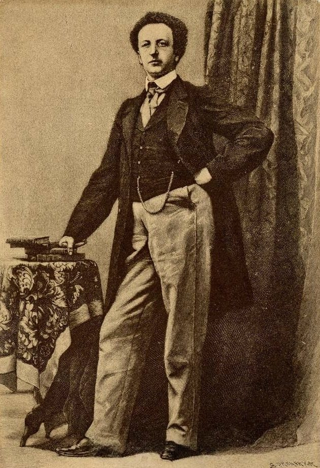
Ferdinand Lassalle · Unknown authorUnknown author · Public domain · Wikimedia Commons
Discursiva 11 (Prova A) · Módulo 2A
Folha de papel ou norma que obriga?
Sociológico: a Constituição real é a soma dos fatores reais de poder; o texto que não os exprime é folha de papel.
Jurídico-normativo: a Constituição é norma, fundamento de validade das demais; vale mesmo quando descumprida.
Força normativa: o texto é condicionado pela realidade, mas também a ordena.
5 · Sentidos de Constituição
Desenvolvimento
Como responder a quem diz que a Constituição é “só papel”
Passo
O que dizer
1. Reconheça a concepção
É a leitura sociológica: manda quem tem força
2. Dê razão ao diagnóstico
A distância entre texto e realidade tem causas reais: orçamento, prioridades, poder de pressão
3. Mostre o erro da conclusão
Descumprir não é invalidar: validade e eficácia são planos distintos
4. Feche com a força normativa
A norma continua obrigando e é o instrumento para cobrar o direito
Módulo 2A; registro da correção da I Unidade: avaliam-se raciocínio e exposição.
5 · Sentidos de Constituição
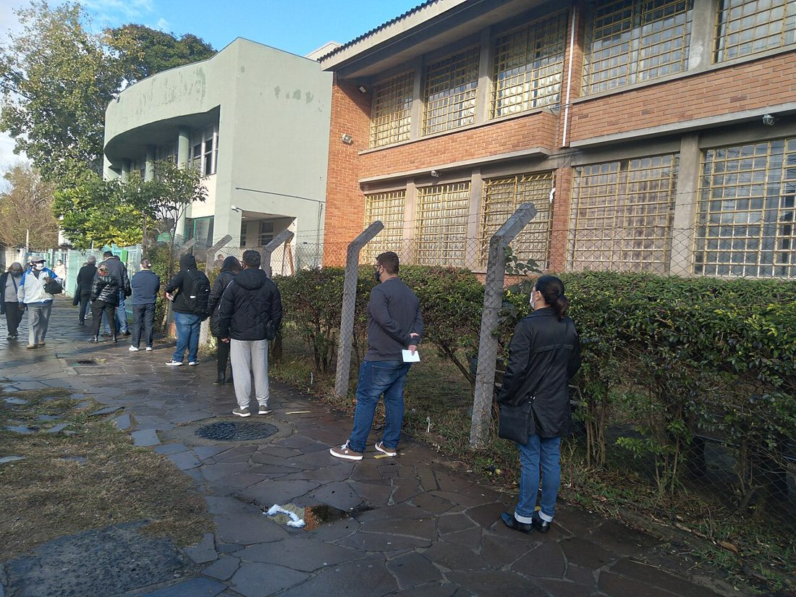
Unidade Básica de Saúde, Porto Alegre · Eugenio Hansen, OFS · CC BY-SA 2.0 · Wikimedia Commons
Para levar
A ideia que resolve
O diagnóstico pode estar certo; a conclusão de que a Constituição não vale, não.
Na discursiva, faça os dois movimentos: onde a fala acerta e onde ela erra.
5 · Sentidos de Constituição
Questão simulada 5
O direito que “não pegou”
Num debate sobre falta de vagas em creches, um líder comunitário diz: “O art. 208 garante creche, mas quem manda aqui são os donos do dinheiro. A Constituição é papel; só a pressão resolve.”
A. Ele está certo nas duas partes: a norma que não se cumpre perde a validade e deixa de obrigar o poder público.
B. Ele está errado nas duas partes: a Constituição se realiza sozinha, e a falta de vagas não tem causa política.
C. Ele acerta no diagnóstico, mas erra na conclusão: descumprir não tira a validade da norma, que segue obrigando.
D. Ele erra no diagnóstico, mas acerta na conclusão: a Constituição só vale quando os fatores reais de poder a aceitam.
E. Ele acerta, porque a concepção normativa ensina que a norma constitucional só vale se for efetivamente cumprida.
Toque na questão para ver o gabarito.
Gabarito: C. A Validade não depende de cumprimento. B A distância entre norma e realidade tem causas reais. D Inverte: o diagnóstico é o que a fala acerta. E A concepção normativa diz o contrário: a norma vale mesmo descumprida.
6 · Normas originárias
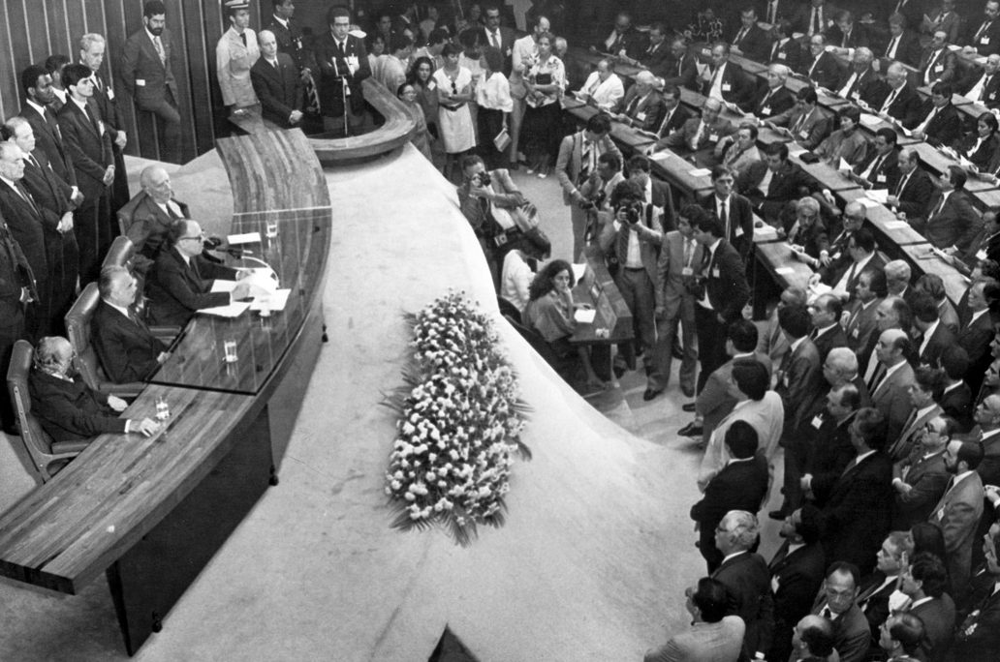
Assembleia Nacional Constituinte, 1987–1988 · Senado Federal · CC BY 2.0 · Wikimedia Commons
Questão 5 · Módulo 3
Norma originária não se controla; emenda, sim
Normas originárias: as que vieram da Constituinte de 1987–1988, no texto de 05/10/1988.
Não há hierarquia entre elas: nenhuma é “inconstitucional” diante de outra; conflitos aparentes se resolvem por interpretação.
Emenda é diferente: obra do poder derivado, pode ser objeto de controle.
6 · Normas originárias
Desenvolvimento
O que o STF decidiu
Caso
O pedido
O que prevaleceu
ADI 815 (1996)
Declarar inconstitucionais os limites de deputados por Estado (art. 45)
Não conhecida: não há hierarquia entre normas originárias
ADI 4.097 (2008)
Declarar inconstitucional a inelegibilidade dos analfabetos (art. 14, § 4º)
Indeferida pelo mesmo fundamento
ADI 939 (Módulo 2B)
Atacar uma emenda constitucional
Emenda derrubada por violar cláusula pétrea
Módulo 3, seção 6; Barroso (2020); Mendes e Branco (2018).
6 · Normas originárias
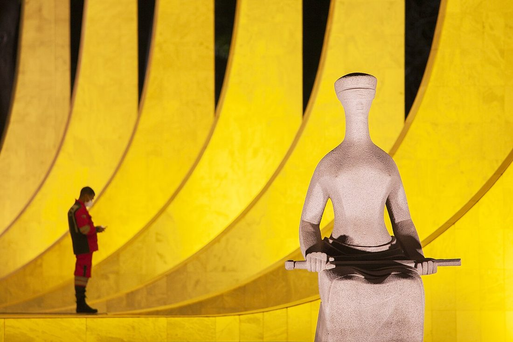
A Justiça, de Alfredo Ceschiatti, diante do STF · Dasfour2022 · CC BY-SA 4.0 · Wikimedia Commons
Para levar
A ideia que resolve
O STF guarda a Constituição; não fiscaliza o constituinte originário.
Cláusula pétrea limita o poder derivado. Não cria normas originárias “superiores” às outras.
6 · Normas originárias
Questão simulada 6
Um artigo original contra outro
Uma associação pede ao STF que declare inconstitucional um parágrafo do texto original de 1988, por contrariar o princípio da igualdade, que também está no texto original.
A. O pedido pode ser acolhido, porque normas protegidas por cláusula pétrea são superiores às demais normas originárias.
B. O pedido não pode ser acolhido, porque não há hierarquia entre normas originárias, e o STF não controla o originário.
C. O pedido pode ser acolhido, porque a guarda da Constituição permite ao STF corrigir escolhas da Constituinte de 1988.
D. O pedido não pode ser acolhido só porque associações nunca podem propor ação perante o Supremo Tribunal Federal.
E. O pedido pode ser acolhido, se o parágrafo tiver sido aprovado na Constituinte por menos de três quintos dos votos.
Toque na questão para ver o gabarito.
Gabarito: B. A Proteção por cláusula pétrea não cria hierarquia. C É o que o STF recusou na ADI 815. D O fundamento é a impossibilidade do pedido, não quem o propõe. E O quórum do art. 60 vale para emendas, não para a Constituinte.
7 · Originário × derivado
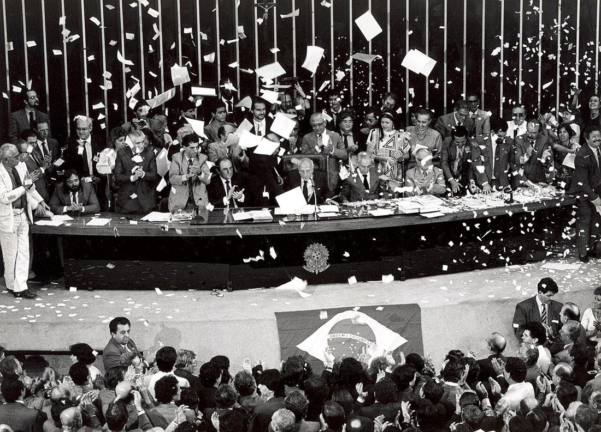
Promulgação da Constituição, 05/10/1988 · Agência Brasil · CC BY 3.0 br · Wikimedia Commons
Discursiva 12 (Prova A) · Módulo 3
O Congresso não é a Constituinte
Poder originário: do povo; inicial, autônomo, juridicamente ilimitado. Feita a Constituição, fica em latência.
Poder derivado reformador: do Congresso; criado pela Constituição e limitado pelo art. 60.
Erro recorrente da I Unidade: confundir o Congresso Nacional com a Assembleia Nacional Constituinte.
7 · Originário × derivado
Desenvolvimento
Por que uma “constituinte exclusiva” convocada por emenda não se sustenta
Argumento
Explicação
O Congresso é poder constituído
Não pode invocar o originário para escapar do art. 60
Não há momento constituinte
O originário só sai da latência numa ruptura
Constituinte “parcial” contraria o originário
Um poder ilimitado não se manifesta por tema
Limites implícitos
Não se muda o titular do poder reformador nem o rito da reforma
O caminho possível
Proposta de emenda, eventualmente submetida a referendo
Módulo 3, seções 4, 6 e 14; o episódio de 2013 está na seção 6.
7 · Originário × derivado
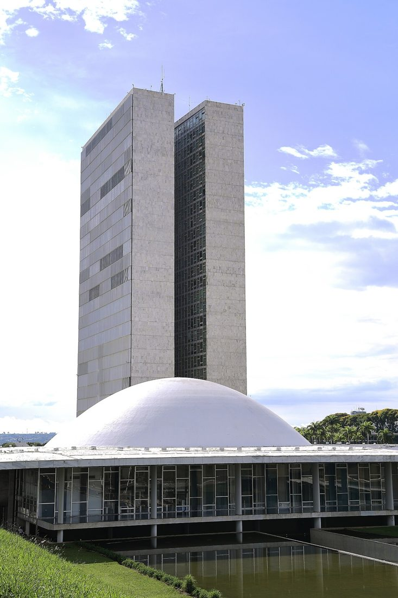
Congresso Nacional, Brasília · Agência Senado from Brasilia, Brazil · CC BY 2.0 · Wikimedia Commons
Para levar
A ideia que resolve
Quem reforma não refunda.
O Congresso pode emendar a Constituição, nos limites do art. 60. Não pode criar quem a refaça.
7 · Originário × derivado
Questão simulada 7
A assembleia para um só tema
Uma PEC prevê que uma assembleia eleita apenas para a reforma tributária poderá aprovar mudanças na Constituição por maioria absoluta, em turno único, sem os limites do art. 60.
A. É válida, porque a assembleia seria eleita pelo povo, titular do poder constituinte, e poderia exercê-lo por tema.
B. É válida, desde que a PEC que convoca a assembleia seja aprovada por três quintos, em dois turnos, em cada Casa.
C. É inválida apenas porque a iniciativa de convocar assembleia constituinte cabe privativamente ao Presidente.
D. É válida, porque o poder originário é permanente e pode ser chamado pelo Congresso sempre que houver crise.
E. É inválida, porque o Congresso, poder constituído, não pode criar órgão que altere a Constituição fora do art. 60.
Toque na questão para ver o gabarito.
Gabarito: E. A O originário não se manifesta por tema nem é convocado pelo poder constituído. B Cumprir o rito não autoriza mudar o rito (limite implícito). C Não há iniciativa privativa de emenda; o vício é outro. D Permanência é latência, não convocação a qualquer tempo.
8 · Limitação circunstancial
Palácio Guanabara, sede do governo do Rio de Janeiro · Rzpguimaraes · CC BY-SA 3.0 · Wikimedia Commons
Questão 6 · Módulo 3
Em crise institucional, a Constituição não se emenda
Art. 60, § 1º: a Constituição não pode ser emendada na vigência de intervenção federal, estado de defesa ou estado de sítio.
A razão: nessas situações, a liberdade de quem reforma pode estar comprometida.
Vale para qualquer tema: a proibição não depende do assunto da emenda nem do Estado envolvido.
8 · Limitação circunstancial
Desenvolvimento
O mapa das limitações ao poder de reforma
Limitação
O que proíbe ou exige
Onde
Formal
Iniciativa restrita, dois turnos, três quintos, promulgação pelas Mesas
Art. 60, I a III, §§ 2º, 3º e 5º
Circunstancial
Emendar durante intervenção federal, estado de defesa ou de sítio
Art. 60, § 1º
Material
Proposta tendente a abolir as cláusulas pétreas
Art. 60, § 4º
Temporal
Emendar durante certo prazo
Não existe em 1988; só em 1824 (art. 174)
Módulo 3, seção 10; Moraes (2017); Lenza (2024).
8 · Limitação circunstancial
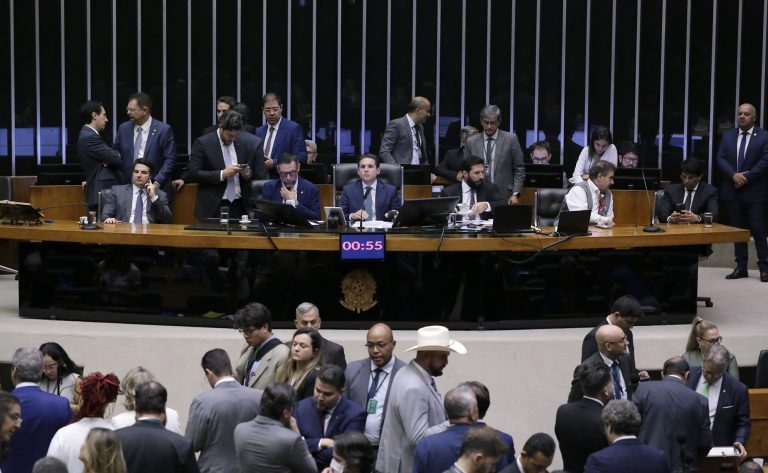
Plenário da Câmara dos Deputados · Kayo Magalhães/Câmara dos Deputados · CC BY 3.0 · Wikimedia Commons
Para levar
A ideia que resolve
Primeiro se encerra a situação excepcional; depois se vota a emenda.
Não confunda: a Constituição de 1988 não tem limitação temporal expressa.
8 · Limitação circunstancial
Questão simulada 8
A emenda no estado de defesa
Durante estado de defesa decretado em parte do território, o Senado vota, em segundo turno, uma PEC sobre a carreira da magistratura.
A. A votação é regular, porque a limitação circunstancial só se aplica à intervenção federal, e não ao estado de defesa.
B. A votação é regular, porque o estado de defesa atinge só uma parte do território e não alcança o Congresso Nacional.
C. A votação viola limitação temporal, porque a Constituição proíbe emendas nos cinco anos seguintes a cada crise.
D. A votação viola limitação circunstancial: a Constituição não pode ser emendada na vigência de estado de defesa.
E. A votação viola cláusula pétrea, porque a carreira da magistratura integra a separação de poderes do art. 60, § 4º.
Toque na questão para ver o gabarito.
Gabarito: D. A O § 1º menciona as três situações. B A proibição é geral enquanto durar a situação. C Não há limitação temporal em 1988. E Confunde limitação circunstancial com material.
9 · Do Poder Moderador ao art. 142
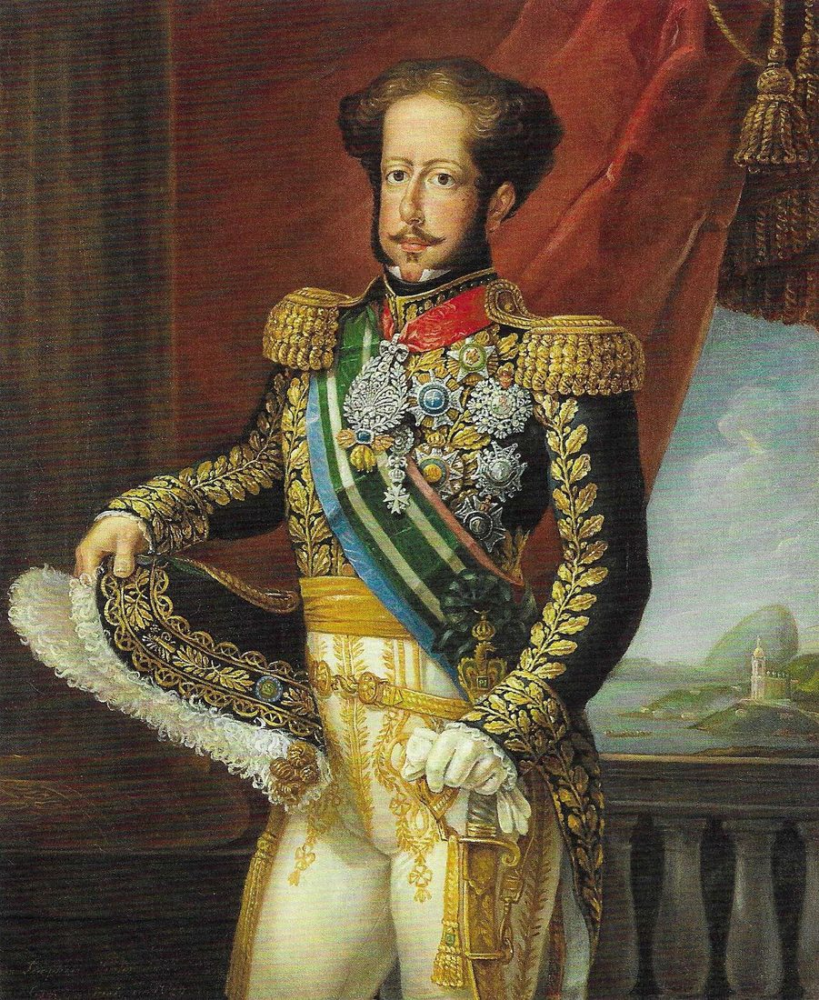
Dom Pedro I, por Simplício Rodrigues de Sá · Simplício Rodrigues de Sá · Public domain · Wikimedia Commons
Questão 7 e Discursiva 12 (Prova B) · Módulo 4
O Moderador estava no texto; o “poder moderador” militar, não
1824, arts. 10 e 98: quatro poderes; o Moderador, “chave de toda a organisação Politica”, cabia ao Imperador.
Semirrigidez, art. 178: só o que tratava de poderes e direitos exigia reforma agravada; o resto mudava por lei.
1891 em diante: o Moderador é extinto; a ideia de um árbitro acima dos poderes passa a ser reivindicada, fora do texto, pelos militares.
9 · Do Poder Moderador ao art. 142
Desenvolvimento
A linha que vai de 1824 a 2024
Momento
O que aconteceu
1824
Força militar “essencialmente obediente” (art. 147); Moderador com o Imperador
1891
República proclamada por levante militar; obediência “dentro dos limites da lei” (art. 14)
Anos 1930
Primeira formulação sistemática da “ideologia do poder moderador das Forças Armadas”
1988
Art. 142: defesa da Pátria, garantia dos poderes constitucionais e, por iniciativa de qualquer deles, da lei e da ordem
2024
ADI 6.457, unânime: o art. 142 não dá às Forças Armadas poder moderador entre os Poderes
Módulo 4, tópicos 2 e 8; Carvalho (2005); STF, ADI 6.457.
9 · Do Poder Moderador ao art. 142
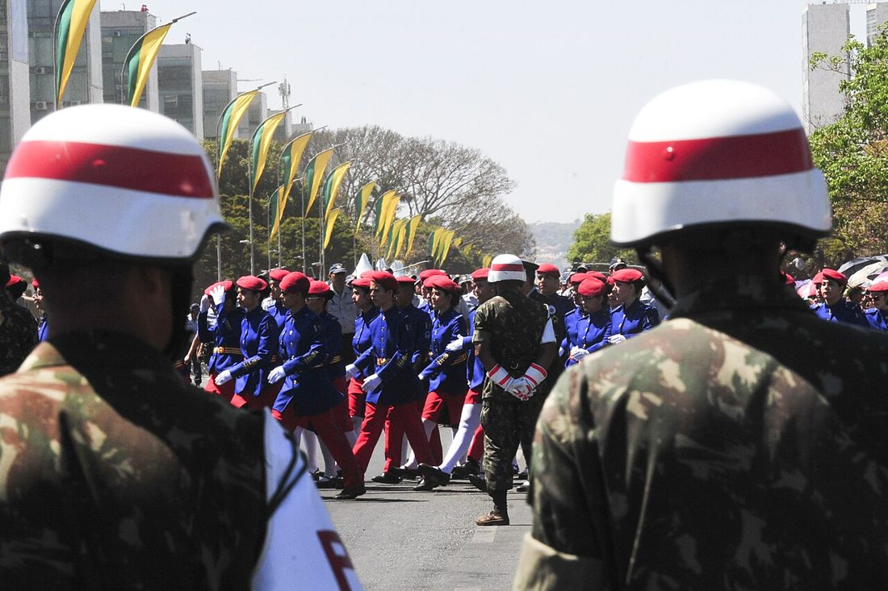
Desfile de 7 de Setembro, Esplanada dos Ministérios · Agência Brasília from Brasília, Brasil · CC BY 2.0 · Wikimedia Commons
Para levar
A ideia que resolve
Garantir os poderes não é arbitrar entre eles.
Na discursiva: explique o Moderador de 1824, mostre que ele não existe em 1988 e cite a decisão do STF.
9 · Do Poder Moderador ao art. 142
Questão simulada 9
As faixas na praça
Durante um conflito entre o Congresso e o Presidente, manifestantes pedem que as Forças Armadas “exerçam o poder moderador do art. 142” e decidam qual dos dois tem razão.
A. O pedido tem base no art. 142, porque garantir os poderes constitucionais inclui decidir qual deles tem razão.
B. O pedido é incompatível: o art. 142 não autoriza as Forças Armadas a arbitrar conflitos entre os Poderes.
C. O pedido tem base no art. 142, porque esse artigo transferiu às Forças Armadas o Poder Moderador do Imperador de 1824.
D. O pedido só seria incompatível se o conflito envolvesse o Judiciário; entre Executivo e Legislativo, ele é admitido.
E. O pedido tem base no art. 142, desde que a atuação militar seja solicitada pelo Presidente, comandante supremo.
Toque na questão para ver o gabarito.
Gabarito: B. A Garantir não é arbitrar. C O Moderador foi extinto em 1891; o art. 142 não o recriou. D A decisão do STF não distingue o Poder envolvido. E A garantia não admite o uso da força de um Poder contra outro.
10 · 1891 e 1937
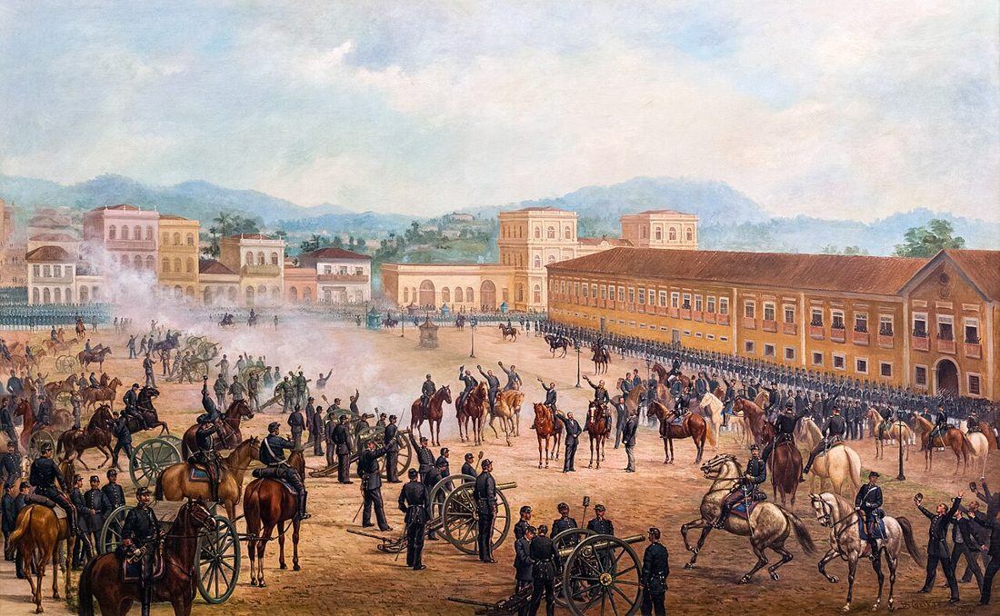
Proclamação da República, por Benedito Calixto (1893) · Benedito Calixto · Public domain · Wikimedia Commons
Questão 8 e Discursiva 11 (Prova B) · Módulos 4 e 2A
Nominal não é semântica
Normativa: a realidade se ajusta ao texto.
Nominal: o texto pretende limitar o poder, mas a realidade ainda não o acompanha: promessa não cumprida.
Semântica: o texto nem pretende limitar; dá forma jurídica a quem já manda.
10 · 1891 e 1937
Desenvolvimento
Duas Constituições, dois diagnósticos
1891
1937
Origem
Promulgada
Outorgada (plebiscito previsto, nunca feito)
O que mudou
Forma de Estado e de governo: República, federação, fim do Moderador
Fechou o Congresso; governo por decretos-leis
O que ficou
Quem mandava: voto restrito (art. 70), cerca de 2% votando em 1894, coronelismo
—
Pretendia limitar o poder?
Sim
Não: organizava a concentração
Classificação
Nominal
Semântica
Módulo 4, tópicos 1, 3 e 4; Módulo 2A (classificação quanto à correspondência com a realidade).
10 · 1891 e 1937
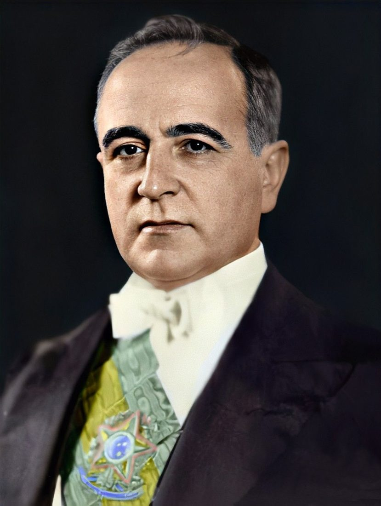
Getúlio Vargas, retrato oficial · Desconhecido. Colorida por Djalma Gomes Netto. · Public domain · Wikimedia Commons
Para levar
A ideia que resolve
Rupturas formais, continuidades materiais.
1891 mudou a forma; quem mandava continuou mandando. 1937 nem prometeu limitar o poder.
10 · 1891 e 1937
Questão simulada 10
A República de poucos
Uma Constituição cria a República e a federação, separa Estado e Igreja e institui um tribunal de cúpula. Ao mesmo tempo, exclui os analfabetos do voto, e só uma pequena fração da população vota nas eleições seguintes.
A. É nominal, porque pretende limitar o poder, mas a realidade não o acompanha, e quem mandava continua mandando.
B. É normativa, porque a criação de um tribunal de cúpula basta para que a realidade passe a se ajustar ao texto.
C. É semântica, porque o texto servia apenas para disfarçar uma ditadura e nunca pretendeu limitar o poder político.
D. Não houve ruptura alguma, porque a forma de Estado e de governo permaneceu igual à do regime anterior.
E. É normativa, porque a federação e a separação entre Estado e Igreja ampliaram de imediato a participação popular.
Toque na questão para ver o gabarito.
Gabarito: A. C Semântica é a que nem pretende limitar (1937). B Instituições no papel não bastam. D A forma mudou de fato. E A exclusão eleitoral desmente a participação ampliada.
11 · Preâmbulo
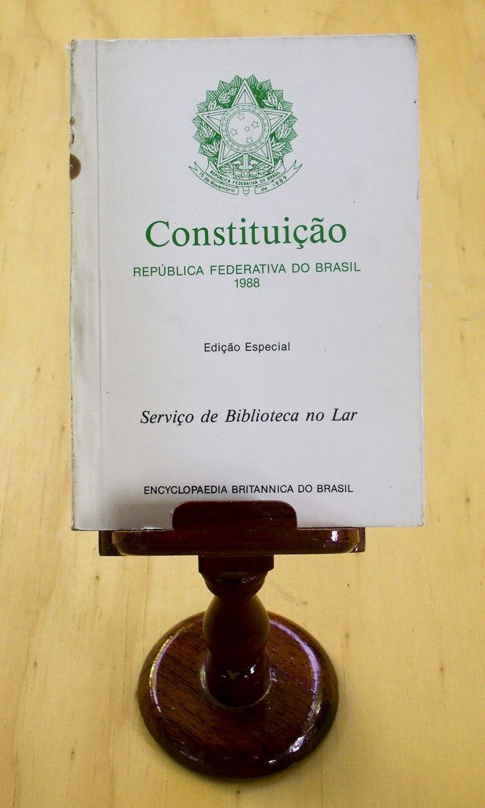
Constituição de 1988, edição de bolso · República Federativa do Brasil · Public domain · Wikimedia Commons
Questão 9 · Módulo 5
O preâmbulo orienta, mas não obriga sozinho
ADI 2.076 (Acre): o preâmbulo “não se situa no âmbito do Direito, mas no domínio da política”.
Consequências: não cria direitos nem deveres, não é de reprodução obrigatória e não é parâmetro de controle.
Mas não é inútil: é vetor de interpretação dos princípios que estão no corpo da Constituição.
11 · Preâmbulo
Desenvolvimento
Três teses e a que prevaleceu
Tese
O que sustenta
Situação
Irrelevância jurídica
O preâmbulo está no domínio da política
Adotada pelo STF na ADI 2.076
Plena eficácia
Tem a mesma força das demais normas
Não prevaleceu
Relevância indireta
Participa da Constituição sem se confundir com o articulado
Posição intermediária
Na prática
Não há inconstitucionalidade por violar o preâmbulo por si
Viola-se o princípio positivado no corpo do texto
Módulo 5, tópico 3; Lenza (2024); Mendes e Branco (2018).
11 · Preâmbulo
Palácio Rio Branco, Rio Branco (AC) · Webysther · CC BY-SA 4.0 · Wikimedia Commons
Para levar
A ideia que resolve
Não é parâmetro de controle; é vetor de interpretação.
O caso veio do Acre: a Constituição estadual não repetia “sob a proteção de Deus”.
11 · Preâmbulo
Questão simulada 11
Um preâmbulo estadual diferente
A Constituição de um Estado não repete o trecho do preâmbulo federal que fala em “sociedade fraterna”. Um deputado estadual sustenta que a omissão torna inconstitucional toda a Constituição do Estado.
A. A tese procede, porque o preâmbulo federal tem força normativa plena e é parâmetro autônomo de controle das leis.
B. A tese procede, porque todo o preâmbulo federal é norma central que os Estados-membros estão obrigados a repetir.
C. A tese não procede, porque o preâmbulo é juridicamente irrelevante e não serve nem para orientar a interpretação.
D. A tese não procede, porque os Estados podem omitir qualquer norma federal que não esteja entre as cláusulas pétreas.
E. A tese não procede, porque o preâmbulo não é de reprodução obrigatória, embora oriente a interpretação do texto.
Toque na questão para ver o gabarito.
Gabarito: E. A É a tese da plena eficácia, que não prevaleceu. B O STF disse o contrário na ADI 2.076. C Acerta o resultado e erra o fundamento. D Generalização falsa sobre a autonomia dos Estados.
12 · ADCT
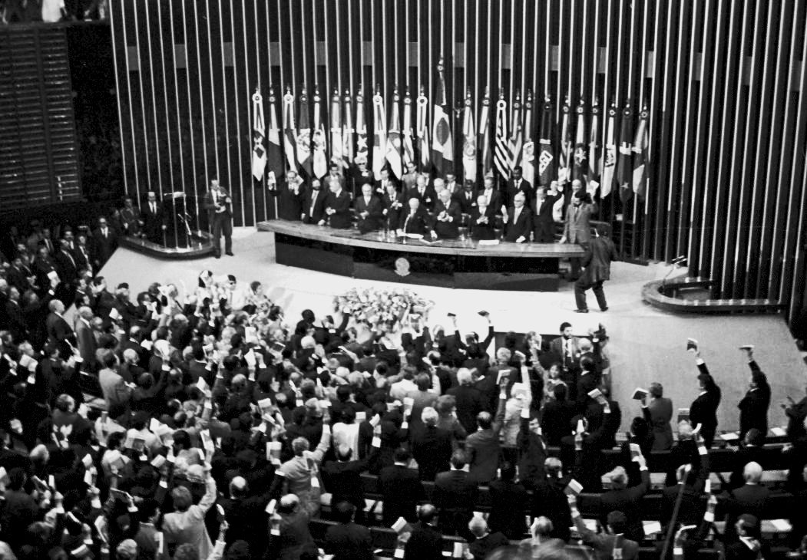
Sessão de promulgação da Constituição, 1988 · Senado Federal · CC BY 2.0 · Wikimedia Commons
Questão 10 · Módulo 5
Transitório, mas constitucional
Mesma hierarquia: as normas do ADCT são normas constitucionais, como as da parte permanente.
Por isso: servem de parâmetro de controle e só mudam por emenda.
ADI 829: “a transitoriedade em si mesma não torna incompossível” a alteração; a emenda respeita os limites do art. 60.
12 · ADCT
Desenvolvimento
O que decorre da natureza constitucional do ADCT
Consequência
Exemplo
Pode excepcionar regras da parte permanente
Regras de transição
É parâmetro de controle
Lei contrária ao ADCT é inconstitucional (RE 160.486)
Só muda por emenda
EC n. 2/1992 antecipou o plebiscito do art. 2º (ADI 829)
Limites da doutrina
Normas já exauridas; direitos atribuídos, como o do art. 68 (quilombolas)
Módulo 5, tópico 6; Lenza (2024); Mendes e Branco (2018).
12 · ADCT
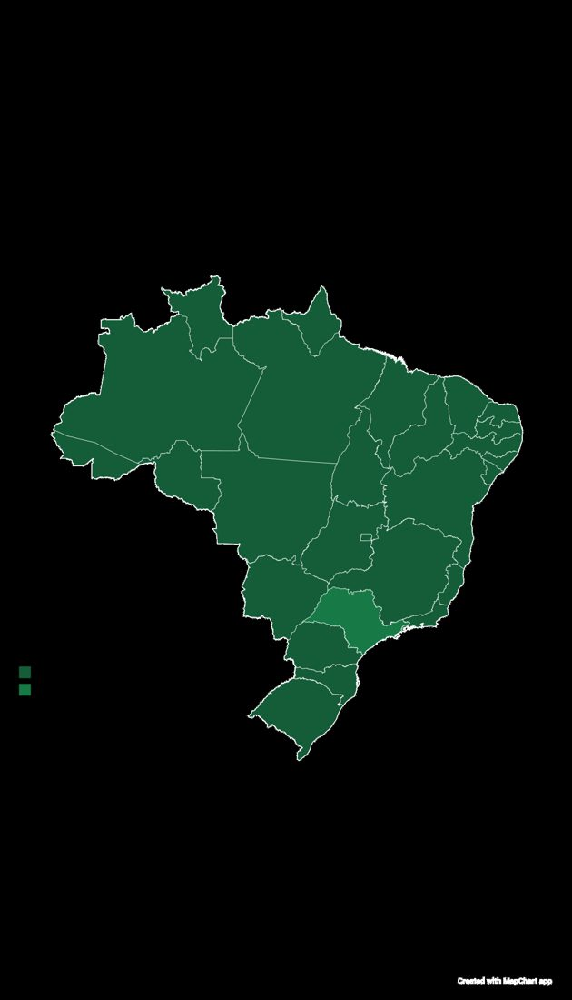
Mapa do resultado do plebiscito de 1993 · José Arlindo Pinto · CC BY-SA 4.0 · Wikimedia Commons
Para levar
A ideia que resolve
Transitoriedade não é imutabilidade, nem hierarquia menor.
O plebiscito de 1993 sobre forma e sistema de governo foi antecipado por emenda, e o STF validou a emenda.
12 · ADCT
Questão simulada 12
A regra de transição alterada
Uma emenda modifica um artigo do ADCT ainda em vigor. Um partido sustenta que a emenda é inválida porque o ADCT teria força de lei complementar e, por isso, só poderia ser alterado por lei.
A. O ADCT tem força de lei complementar e, por isso, só pode ser alterado por lei aprovada pela maioria absoluta.
B. O ADCT é constitucional, mas imutável, porque o caráter transitório impede qualquer atuação do poder derivado.
C. O ADCT não serve de parâmetro de controle, porque se limita a orientar a interpretação da parte permanente.
D. O ADCT tem hierarquia constitucional e pode ser emendado, desde que respeitados os limites do poder de reforma.
E. O ADCT pode ser alterado livremente, porque a parte transitória não se sujeita aos limites materiais do art. 60.
Toque na questão para ver o gabarito.
Gabarito: D. A O ADCT integra a Constituição. B É o argumento afastado na ADI 829. C Lei contrária ao ADCT é inconstitucional. E Emendas ao ADCT têm os mesmos limites de qualquer emenda.
Revisão · fechamento
Para a prova
Cinco cuidados que valem pontos
Leia o caso inteiro antes das alternativas: a resposta quase sempre depende de um detalhe do enunciado.
Desconfie da alternativa que repete o enunciado com uma palavra trocada: “rígida” por “suprema”, “Congresso” por “Constituinte”.
Separe forma de conteúdo: documento, assembleia e voto dizem respeito à forma; limitar o poder é o conteúdo.
Nas discursivas, explique o porquê: não basta nomear o conceito; mostre como ele resolve o caso.
Escreva em texto corrido, com começo, meio e conclusão, e releia antes de entregar.
Créditos das imagens
Imagens
Créditos das imagens
q1a Declaration of the Rights of Man and of the Citizen in 1789 cropped he — Localcosmos — CC0
q1b Montesquieu - Versailles MV 2976.png — After Jacques-Antoine Dassier — Public domain
q2a Magna Carta (British Library Cotton MS Augustus II.106).jpg — Original authors were the barons and Kin — Public domain
q2b Palace of Westminster, London - Feb 2007.jpg — Diliff — CC BY-SA 2.5
q3a Jacques-Louis David - The Emperor Napoleon in His Study at the Tuileri — Jacques-Louis David — Public domain
q4a Fachada do Supremo Tribunal Federal (STF) (54334559198).jpg — Agência Senado from Brasilia, Brazil — CC BY 2.0
q4b Hans Kelsen (Nr. 17) - Bust in the Arkadenhof, University of Vienna - — Hubertl — CC BY-SA 4.0
q5a Ferdinand Lassalle standing portrait.jpg — Unknown authorUnknown author — Public domain
q5b Unidade Básica de Saúde Santa Cecília (Porto Alegre, Brasil).jpg — Eugenio Hansen, OFS — CC BY-SA 2.0
q6a Assembleia Constituinte (37684796576).jpg — Senado Federal — CC BY 2.0
q6b Supreme Federal Court - Statue.jpg — Dasfour2022 — CC BY-SA 4.0
q7a Promulgação-Constituição-1988.jpg — Agência Brasil — CC BY 3.0 br
q7b Imagens de Brasília - Fachada do Palácio do Congresso Nacional (534576 — Agência Senado from Brasilia, Brazil — CC BY 2.0
q8a Palácio Guanabara exterior.JPG — Rzpguimaraes — CC BY-SA 3.0
q8b Plenário da Câmara dos Deputados durante votação da PEC das Prerrogati — Kayo Magalhães/Câmara dos Deputados — CC BY 3.0
q9a Simplício Rodrigues de Sá - Retrato de Dom Pedro I.jpg — Simplício Rodrigues de Sá — Public domain
q9b Desfile de 7 de Setembro na Esplanada dos Ministérios (36896845486).jp — Agência Brasília from Brasília, Brasil — CC BY 2.0
q10a Proclamação da República by Benedito Calixto 1893.jpg — Benedito Calixto — Public domain
q10b Getúlio Vargas - retrato oficial de 1930.JPG — Desconhecido. Colorida por Djalma Gomes — Public domain
q11a Constituição da República Federativa do Brasil 1988 (livro de bolso,ex — República Federativa do Brasil — Public domain
q11b Webysther 20150907164050 - Palácio Rio Branco.jpg — Webysther — CC BY-SA 4.0
q12a Promulgação da Constituição (8430668400).jpg — Senado Federal — CC BY 2.0
q12b Mapa do Plebiscito 1993 do Brasil.png — José Arlindo Pinto — CC BY-SA 4.0
Todas as imagens vêm do Wikimedia Commons; endereços completos em imagens-revisao-ii/creditos.json.
Transparência
Como este material foi feito
Declaração de uso de Inteligência Artificial Generativa
As lâminas e as questões simuladas foram estruturadas e redigidas com apoio de Inteligência Artificial Generativa — Claude (Anthropic) —, a partir dos módulos da disciplina e da prova da II Unidade, sob direção, revisão e responsabilidade integral do professor.
Portaria CNPq nº 2.664/2026. Imagens de licença livre, com crédito na lâmina anterior.
Lâmina1/80
Alvo18:30
Agora--:--
Ritmo-
setas navegam · F tela cheia · G gabarito · O oculta opcionais · M limpa tudo · H oculta este painel